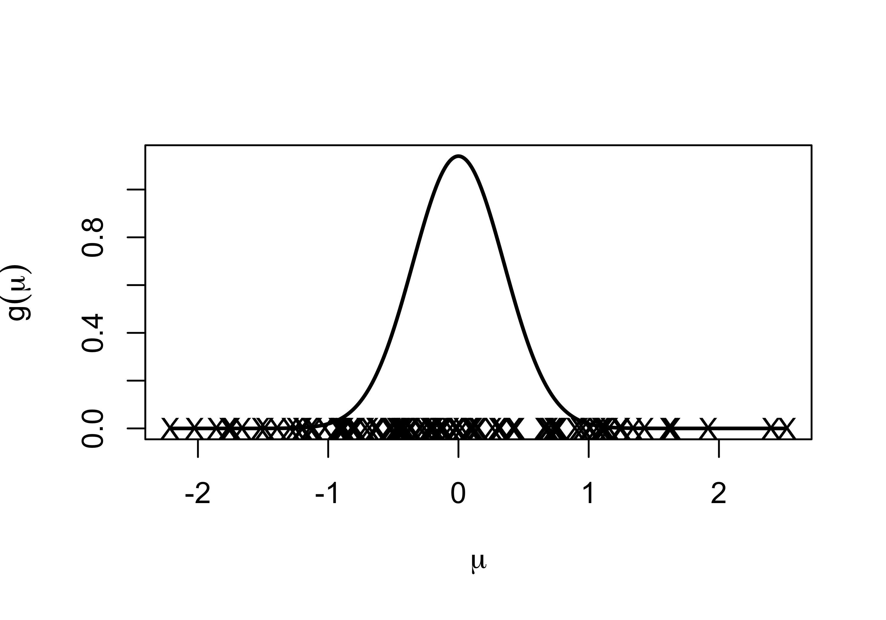
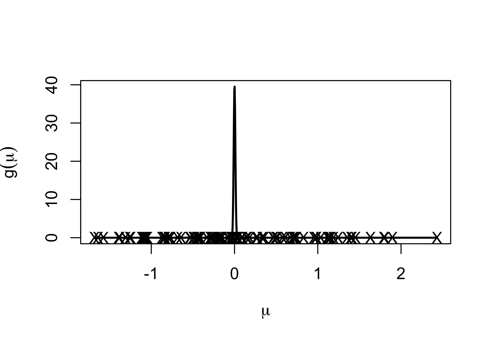
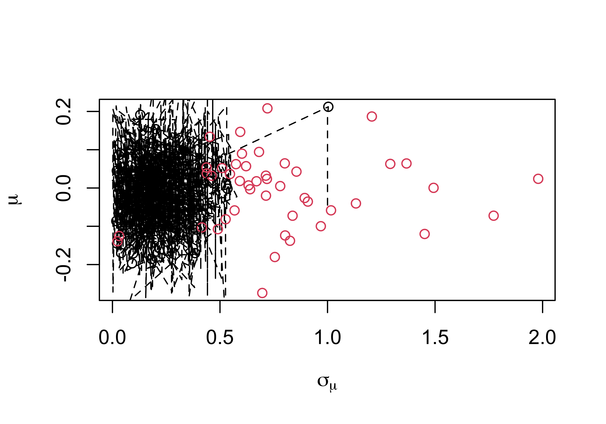
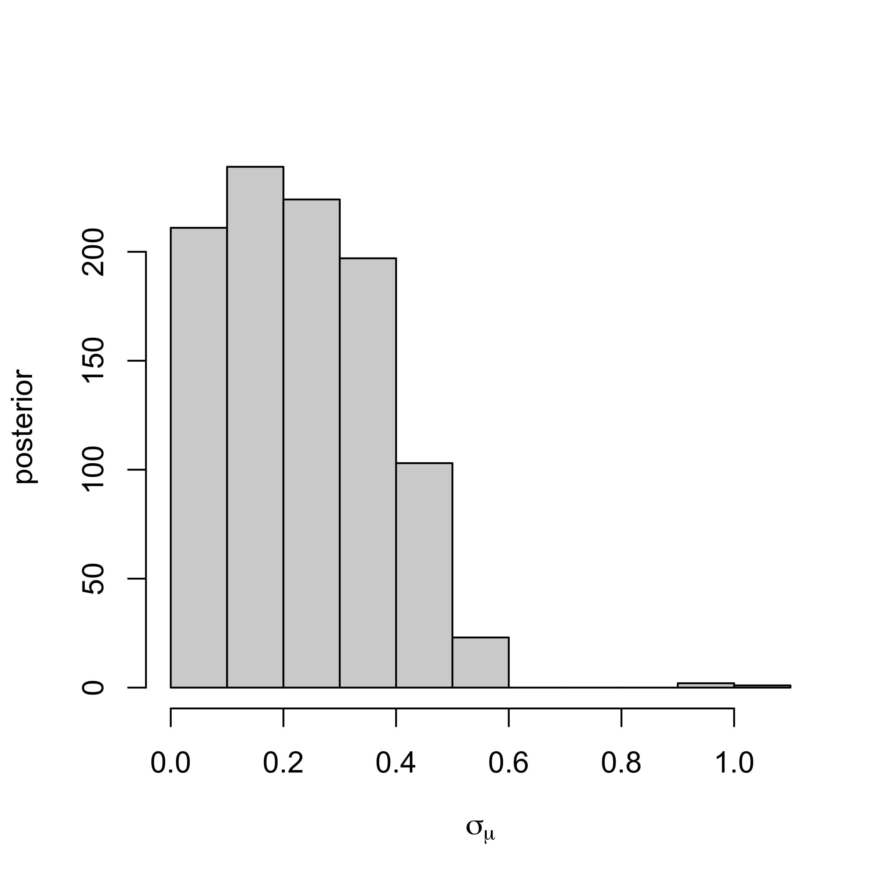
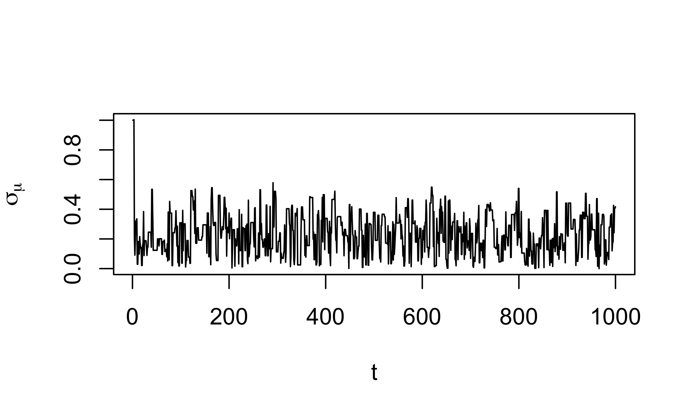
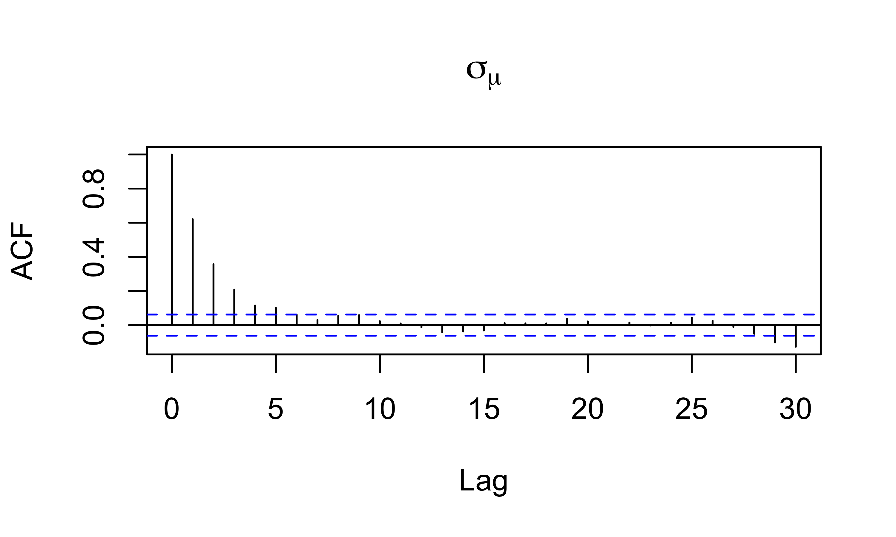

Lecture 5: Introduction to Hierarchical Modelling, Empirical Bayes, and MCMC
Normal Means Model
Suppose we have normal data with \[Y_i \overset{iid}{\sim} \textsf(\mu_i, \sigma^2)\]
- separate mean for each observation!
Question: How can we possibly hope to estimate all these \(\mu_i\)? One \(y_i\) per \(\mu_i\) and \(n\) observations!
Naive estimator: just consider only using \(y_i\) in estimating and not the other observations.
- MLE \(\hat{\mu}_i = y_i\)
Hierarchical Viewpoint: Let’s borrow information from other observations!
Motivation
Example \(y_i\) is difference in gene expression for the \(i^{\text{th}}\) gene between cancer and control lines
may be natural to think that the \(\mu_i\) arise from some common distribution, \(\mu_i \overset{iid}{\sim} g\)
- unbiased but high variance estimators of \(\mu_i\) based on one observation!
Low Variability

little variation in \(\mu_i\)s so a better estimate might be \(\bar{y}\)
Not forced to choose either - what about some weighted average between \(y_i\) and \(\bar{y}\)?
Simple Example
Data Model
\[Y_i \mid \mu_i, \sigma^2 \overset{iid}{\sim} \textsf(\mu_i, \sigma^2)\]
Means Model \[\mu_i \mid \mu, \tau \overset{iid}{\sim} \textsf(\mu, \sigma^2_{\mu})\]
not necessarily a prior!
Now estimate \(\mu_i\) (let \(\phi = 1/\sigma^2\) and \(\phi_{\mu} = 1/\sigma^2_\mu\))
Calculate the “posterior” \(\mu_i \mid y_i, \mu, \phi, \phi_\mu\)
Hiearchical Estimates
Posterior: \(\mu_i \mid y_i, \mu, \phi, \phi_\mu \overset{ind}{\sim} \textsf{N}(\tilde{\mu}_i, 1/\tilde{\phi}_\mu)\)
estimator of \(\mu_i\) weighted average of data and population parameter \(\mu\)
\[\tilde{\mu}_i = \frac{\phi_\mu \mu + \phi y_i} {\phi_\mu + \phi} \qquad \qquad \tilde{\phi}_\mu = \phi + \phi_\mu\]
if \(\phi_\mu\) is large relative to \(\phi\) all of the \(\mu_i\) are close together and benefit by borrowing information
in limit as \(\sigma^2_\mu \to 0\) or \(\phi_\mu \to \infty\) we have \(\tilde{\mu}_i = \mu\) (all means are the same)
if \(\phi_\mu\) is small relative to \(\phi\) little borrowing of information
in the limit as \(\phi_\mu \to 0\) we have \(\tilde{\mu}_i = y_i\)
Bayes Estimators and Bias
Note: you often benefit from a hierarchical model, even if its not obvious that the \(\mu_i\)s are related!
The MLE for the \(\mu_i\) is just the sample \(y_i\).
\(y_i\) is unbiased for \(\mu_i\) but can have high variability!
the posterior mean is actually biased.
Usually through the weighting of the sample data and prior, Bayes procedures have the tendency to pull the estimate of \(\mu_i\) toward the prior or shrinkage mean.
Why would we ever want to do this? Why not just stick with the MLE?
MSE or Bias-Variance Tradeoff
Modern relevance
The fact that a biased estimator would do a better job in many estimation/prediction problems can be proven rigorously, and is referred to as Stein’s paradox.
Stein’s result implies, in particular, that the sample mean is an inadmissible estimator of the mean of a multivariate normal distribution in more than two dimensions i.e. there are other estimators that will come closer to the true value in expectation.
In fact, these are Bayes point estimators (the posterior expectation of the parameter \(\mu_i\)).
Most of what we do now in high-dimensional statistics is develop biased estimators that perform better than unbiased ones.
Examples: lasso regression, ridge regression, various kinds of hierarchical Bayesian models, etc.
Population Parameters
we don’t know \(\mu\) (or \(\sigma^2\) and \(\sigma^2_\mu\) for that matter)
Find marginal likelihood \(\cal{L}(\mu, \sigma^2, \sigma^2_\mu)\) by integrating out \(\mu_i\) with respect to \(g\)
\[\cal{L}(\mu, \sigma^2, \sigma^2_\mu) \propto \prod_{i = 1}^n \int \textsf{N}(y_i; \mu_i, \sigma^2) \textsf{N}(\mu_i; \mu, \sigma^2_\mu) \, d \mu_i\]
- Product of predictive distributions for \(Y_i \mid \mu, \sigma^2, \sigma^2_\mu \overset{iid}{\sim} \textsf{N}(\mu, \sigma^2 + \sigma^2_\mu)\)
\[\cal{L}(\mu, \sigma^2, \sigma^2_\mu) \propto \prod_{i = 1}^n (\sigma^2 + \sigma^2_\mu)^{-1/2} \exp \left\{ - \frac{1}{2} \frac{\left(y_i - \mu \right)^2}{\sigma^2 + \sigma^2_\mu }\right\}\]
- Find MLE’s
MLEs
\[\cal{L}(\mu, \sigma^2, \sigma^2_\mu) \propto (\sigma^2 + \sigma^2_\mu)^{-n/2} \exp\left\{ - \frac{1}{2} \sum_{i=1}^n\frac{\left(y_i - \mu \right)^2}{\sigma^2 + \sigma^2_\mu }\right\}\]
MLE of \(\mu\): \(\hat{\mu} = \bar{y}\)
Can we say anything about \(\sigma^2_\mu\)? or \(\sigma^2\) individually?
MLE of \(\sigma^2 + \sigma^2_\mu\) is
\[\widehat{\sigma^2 + \sigma^2_\mu} = \frac{\sum(y_i - \bar{y})^2}{n}\]
- Assume \(\sigma^2\) is known (say 1)
\[\hat{\sigma}^2_\mu = \frac{\sum(y_i - \bar{y})^2}{n} - 1\]
Empirical Bayes Estimates
plug in estimates of hyperparameters into the prior and pretend they are known
resulting estimates are known as Empirical Bayes
underestimates uncertainty
Estimates of variances may be negative - constrain to 0 on the boundary)
Fully Bayes would put a prior on the unknowns
Bayes and Hierarchical Models
We know the conditional posterior distribution of \(\mu_i\) given the other parameters, lets work with the marginal likelihood \(\cal{L}(\theta)\)
need a prior \(\pi(\theta)\) for unknown parameters are \(\theta = (\mu, \sigma^2, \sigma^2_\mu)\) (details later)
Posterior
\[\pi(\theta \mid y) = \frac{\pi(\theta) \cal{L}(\theta)} {\int_\Theta \pi(\theta) \cal{L}(\theta) \, d\theta} = \frac{\pi(\theta) \cal{L}(\theta)} {m(y)}\]
Problems:
- Except for simple cases (conjugate models) \(m(y)\) is not available analytically
Large Sample Approximations
- Appeal to BvM (Bayesian Central Limit Theorem) and approximate \(\pi(\theta \mid y)\) with a Gaussian distribution centered at the posterior mode \(\hat{\theta}\) and asymptotic covariance matrix
\[V_\theta = \left[- \frac{\partial^2}{\partial \theta \partial \theta^T} \left\{\log(\pi(\theta)) + \log(\cal{L}(\theta)) \right\} \right]^{-1}\]
we can try to approximate \(m(y)\) but this may involve a high dimensional integral
Laplace approximation to integral (also large sample)
Stochastic methods
Stochastic Integration
\[\textsf{E}[h(\theta) \mid y] = \int_\Theta h(\theta) \pi(\theta \mid y) \, d\theta \approx \frac{1}{T}\sum_{t=1}^{T} h(\theta^{(t)}) \qquad \theta^{(t)} \sim \pi(\theta \mid y)\]
what if we can’t sample from the posterior but can sample from some distribution \(q()\)
\[\textsf{E}[h(\theta) \mid y] = \int_\Theta h(\theta) \frac{\pi(\theta \mid y)}{q(\theta)} q(\theta)\, d\theta \approx \frac{1}{T}\sum_{t=1}^{T} h(\theta^{(t)}) \frac{\pi(\theta^{(t)} \mid y)} {q(\theta^{(t)})} \qquad\] where \(\theta^{(t)} \sim q(\theta)\)
Without the denominator in \(\pi(\theta \mid y)\) we just have \(\pi(\theta \mid y) \propto \pi(\theta) \cal{L}(\theta)\)
- use twice for numerator and denominator
Important Sampling Estimate
Estimate of \(m(y)\)
\[m(y) \approx \frac{1}{T} \sum_{t=1}^{T} \frac{\pi(\theta^{(t)}) \cal{L}(\theta^{(t)})}{q(\theta^{(t)})} \qquad \theta^{(t)} \sim q(\theta)\]
\[\textsf{E}[h(\theta) \mid y] \approx \frac{\sum_{t=1}^{T} h(\theta^{(t)}) \frac{\pi(\theta^{(t)}) \cal{L}(\theta^{(t)})}{q(\theta^{(t)})}} { \sum_{t=1}^{T} \frac{\pi(\theta^{(t)}) \cal{L}(\theta^{(t)})}{q(\theta^{(t)})}} \qquad \theta^{(t)} \sim q(\theta)\]
\[\textsf{E}[h(\theta) \mid y] \approx \sum_{t=1}^{T} h(\theta^{(t)}) w(\theta^{(t)}) \qquad \theta^{(t)} \sim q(\theta)\]
with un-normalized weights \(w(\theta^{(t)}) \propto \frac{\pi(\theta^{(t)}) \cal{L}(\theta^{(t)})}{q(\theta^{(t)})}\)
(normalize to sum to 1)
Markov Chain Monte Carlo (MCMC)
- Typically \(\pi(\theta)\) and \(\cal{L}(\theta)\) are easy to evaluate
How do we draw samples only using evaluations of the prior and likelihood in higher dimensional settings?
- construct a Markov chain \(\theta^{(t)}\) in such a way the the stationary distribution of the Markov chain is the posterior distribution \(\pi(\theta \mid y)\)!
\[\theta^{(0)} \overset{k}{\longrightarrow} \theta^{(1)} \overset{k}{\longrightarrow} \theta^{(2)} \cdots\]
\(k_t(\theta^{(t-1)} ; \theta^{(t)})\) transition kernel
initial state \(\theta^{(0)}\)
choose some nice \(k_t\) such that \(\theta^{(t)} \to \pi(\theta \mid y)\) as \(t \to \infty\)
biased samples initially but get closer to the target
Metropolis Algorithm (1950’s)
Markov chain \(\theta^{(t)}\)
propose \(\theta^* \sim g(\theta^{(t-1)})\) where \(g()\) is a symmetric distribution centered at \(\theta^{(t-1)}\)
set \(\theta^{(t)} = \theta^*\) with some probability
otherwise set \(\theta^{(t)} = \theta^{(t-1)}\)
Acceptance probability is
\[\alpha = \min \left\{ 1, \frac{\pi(\theta^*) \cal{L}(\theta^*)} {\pi(\theta^{(t-1)}) \cal{L}(\theta^{(t-1)})}\right\}\]
- ratio of posterior densities where normalizing constant cancels!
Example
Let’s use a prior for \(p(\mu) \propto 1\)
Posterior for \(\mu \mid \sigma^2, \sigma^2_\mu\) is \(\textsf{N}\left(\bar{y}, \frac{\sigma^2 + \sigma^2_\mu}{n}\right)\)
\[\cal{L}(\sigma^2, \sigma^2_\tau) \propto (\sigma^2 + \sigma^2_\mu)^{-\frac{n - 1}{2}} \exp \left\{ - \frac 1 2 \sum_i \frac{(y_i - \bar{y})^2}{\sigma^2 + \sigma^2_\mu)} \right\}\]
Take \(\sigma^2 = 1\)
Use a \(\textsf{Cauchy}(0,1)\) prior on \(\sigma_\mu\)
Symmetric proposal for \(\sigma_\tau\)? Try a normal with variance \(\frac{2.4^2}{d} \textsf{var}(\sigma_\mu)\) where \(d\) is the dimension of \(\theta\) (d = 1)
Joint Posterior

Marginal Posterior

MLE of \(\sigma_\mu\) is 0.11
Trace Plots

Acceptance probability is 0.57
Goal is around 0.44 in 1 dimension to 0.23 in higher dimensions
AutoCorrelation Function
